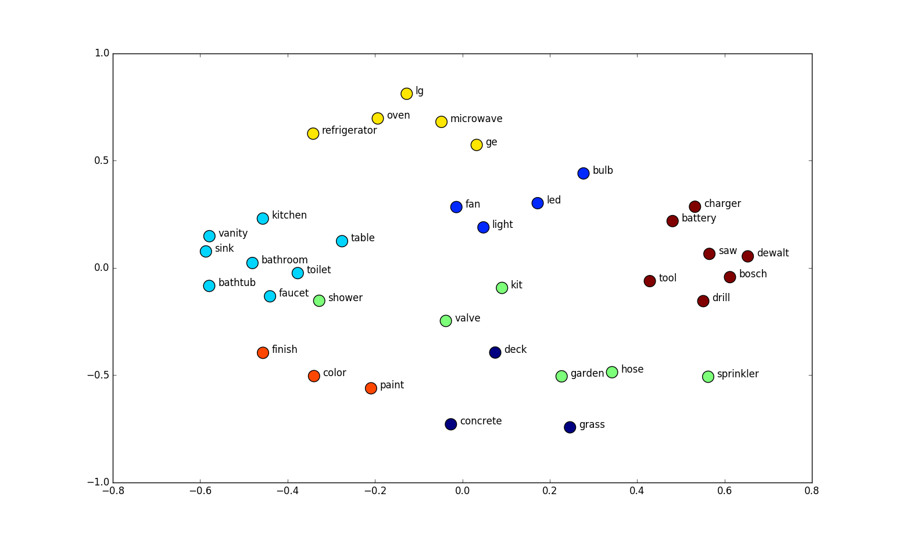
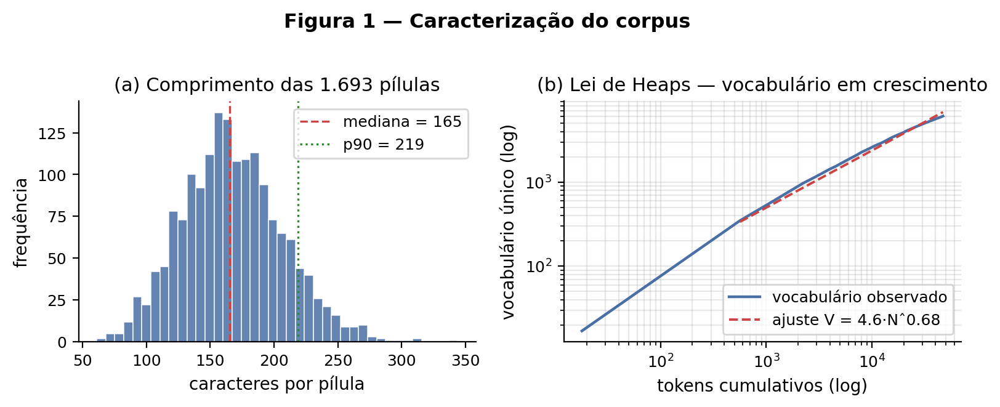
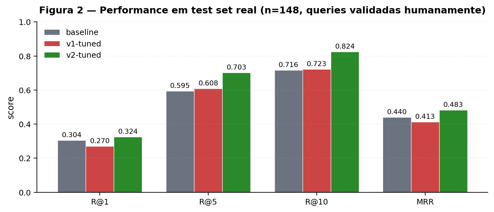
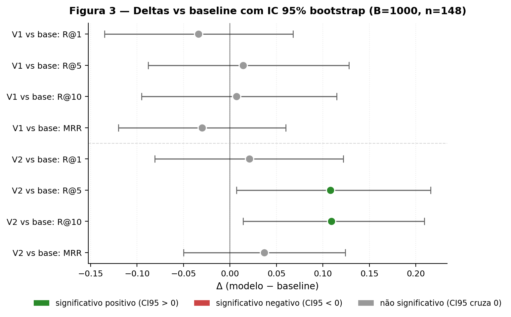

A estratégia de geração de dataset supervisionado importa mais que o método de treino.

Fonte da figura: web.engr.oregonstate.edu/~huanlian/teaching/ML (visualização 2D clássica de word embeddings).
Hipótese de trabalho: modelos de embedding pré-treinados em corpora genéricos (web, livros) podem ter dificuldade em domínios fechados com vocabulário próprio, gírias e ambiguidade contextual.
Caso de estudo: servidor LATAM de Ragnarok Online — MMORPG com comunidade brasileira ativa no Discord oficial, terminologia altamente especializada (Kafra, refino, MVP, dupe, rebornar, etc.).
A hipótese é razoável, mas precisamos de evidência. Antes de tentar fine-tunar qualquer coisa, fizemos uma exploração da base no EP01 para verificar se há sinais concretos dessa dificuldade.
Top OOV mais frequentes: latam, tbm, kkk, kafra, rufio, npc, refino, prontera, dupe, woe, vcs...
Algoritmo desenvolvido para esta análise: uma palavra é considerada in-vocabulary se (a) o tokenizador do BERTimbau (BERT pt-BR) a mapeia em um único token, ou (b) ela aparece no dicionário pt-BR da NLTK (com normalização de acentos). Caso contrário, classificada como OOV. Critério é estrito mas suficiente para sinalizar gap léxico.
| Termo | Sentido geral (embedding) | Sentido no Ragnarok (PMI) |
|---|---|---|
ovo | comida, ouve, opa | item de gacha (loot box) |
carta | papel, cartão | item raro com efeitos |
galho | botânica, ramo | item de invocação de monstro |
freya | divindade nórdica | nome de servidor |
refino | refino genérico | upgrade numerado (+4, +7, +10) |
Insight: mesmo termos que o encoder "conhece" são mapeados para a região errada do espaço vetorial. Junto com o OOV alto, isto sustenta a hipótese de que fine-tuning deveria ajudar.
Considere os termos "galho seco", "árvore" e "monstro". Por similaridade léxica/textual, um encoder genérico aproxima galho seco ~ árvore (ambos botânicos). Mas no Ragnarok, "galho seco" é um item que invoca um monstro aleatório — semanticamente, no domínio, ele está muito mais próximo de monstro.
A função de custo (MNRL) empurra pares (pergunta, pílula correta) a ficarem próximos no espaço; pares com pílula errada, a ficarem distantes. Visualmente: é exatamente esse rearranjo que o fine-tuning aprende.

Pílulas curtas (mediana 165 chars). Lei de Heaps β = 0.68 (≫ 0.5) → vocabulário não-saturado. Eventos sazonais e atualizações do jogo continuam introduzindo termos novos que um modelo congelado não tratará bem.
Com a hipótese sustentada pela exploração (OOV alto, termos ambíguos, vocabulário em crescimento), a questão se torna respondível por experimento. Spoiler: a resposta é condicional — depende fortemente de como o dataset supervisionado é construído. A questão será refinada mais adiante (após observar um resultado contra-intuitivo).
(pergunta, pílula). Split temporal P80 → 1.354 treino, 339 teste.Por que sintético? Em queries reais é difícil construir pares (pergunta, pílula-correta) sem rotulagem manual cara. Sintético permite controle total: cada pílula tem uma pergunta direcionada a ela, e mais tarde, pares positivo/negativo bem definidos.
Split temporal estrito (treino até 2025-12-04, teste após) — zero leakage. Próximos slides: rodamos esse pipeline, vemos um resultado bom, mas desconfiamos. Aí construímos um test de queries reais e descobrimos um problema — que motiva uma V2 do dataset.
BGE-M3 (foco, 1024 dims, open-source SOTA)text-embedding-3-large (OpenAI, baseline closed)MiniLM-L12-v2 (compacto, referência leve)Toda métrica olha pra onde o gold apareceu na lista que o retriever devolveu.
"O gold está nos top-K?" Binário por query (1 = sim, 0 = não). Média entre queries = % de cobertura.
Query: "como faço X?" — modelo devolveu top-5:
R@1 = 0 | R@5 = 1 | R@10 = 1
RR = 1/rank do gold. MRR = média de RR entre queries. Penaliza posição: gold em #1 vale 5× mais que gold em #5.
| Query | Rank do gold | RR = 1/rank |
|---|---|---|
| q1 | 1 | 1.000 |
| q2 | 5 | 0.200 |
| q3 | não veio (∞) | 0.000 |
| MRR = | média | 0.400 |
R@K mede cobertura (achou ou não nos top-K). MRR mede qualidade do ranking (achou em qual posição). Reportar ambos = visão completa.
| Modelo | R@1 | R@5 | R@10 | MRR |
|---|---|---|---|---|
| MiniLM-L12-v2 | 0.366 | 0.581 | 0.673 | 0.457 |
| BAAI/bge-m3 | 0.643 | 0.850 | 0.909 | 0.732 |
| OpenAI text-embedding-3-large | 0.652 | 0.900 | 0.932 | 0.755 |
| BGE-M3 | R@1 | R@5 | R@10 | MRR | Δ MRR |
|---|---|---|---|---|---|
| baseline | 0.643 | 0.850 | 0.909 | 0.732 | — |
| V1-tuned | 0.746 | 0.935 | 0.973 | 0.825 | +12.7% |
Primeira leitura: hipótese confirmada com folga. BGE-M3 fine-tuned (0.825) supera até o baseline OpenAI (0.755).
Mas algo cheira mal. O ganho parece grande demais. E o test set foi gerado pela mesma técnica que o treino — pode estar enviesado a favor do modelo. Decidimos validar com um teste independente: queries reais do Discord.
Pipeline de funil: 576k msgs do Discord → 148 queries com gold validado humanamente.
Regex pega estrutura interrogativa. Qwen 2.5 7B (Ollama, local) faz 2 passes semânticos: in-game (é sobre o jogo?) + self-contained (responde sem contexto?).
OpenAI text-embedding-3-large traz os top-30 candidatos por similaridade. Usar OpenAI (e não BGE-M3) evita viés circular na avaliação posterior.
Fase 1: Gemini 3.5 Flash em 200 queries → 66 matched. Fase 2: Gemini 2.5 Flash em 300 queries → 156 matched.
Eu validei 1-a-1 os 156 matched da Fase 2: 82 mantidos, 74 rejeitados (47% rejection rate confirma que LLM-as-judge sozinho não basta).
Pegamos 148 queries reais do Discord (com gold validado humanamente — detalhes adiante) e avaliamos os mesmos modelos:
| BGE-M3 | R@1 | R@5 | R@10 | MRR | Δ MRR |
|---|---|---|---|---|---|
| baseline | 0.304 | 0.595 | 0.716 | 0.452 | — |
| V1-tuned | 0.271 | 0.608 | 0.723 | 0.421 | −6.9% |
V1-tuned ficou pior que o baseline em queries reais. O ganho de +12.7% no sintético não generalizou.
Conclusão imediata: nosso pipeline de geração V1 está produzindo perguntas artificiais, fora da distribuição real. O modelo overfit nesse estilo sintético e perdeu competência em queries reais.
Procurando soluções para o problema, encontramos Wei et al. (Airbnb, 2026) — "Bridging the Cold-Start Gap". Eles enfrentaram o mesmo problema ao lançar busca natural sem dados de produção: como gerar dataset sintético que generalize para queries reais?
Findings deles que aplicamos aqui:
Aplicamos exatamente isso para criar a V2 do nosso dataset. Mantemos as perguntas sintéticas (controle de pares positivo/negativo + escala), mas a geração agora é guiada por queries reais coletadas do Discord. Reais ficam reservadas exclusivamente para avaliação.
Prompt: "Gere uma pergunta criativa sobre este texto."
Entrada: 1 pílula positiva.
Negativos: só in-batch (fáceis).
Estilo produzido: "Em qual situação seria ideal utilizar..."
Prompt: contrastivo — "gere pergunta respondida pelo POSITIVO mas NÃO pelo NEGATIVO; imite o estilo dos exemplos".
Entrada: 4 seeds reais (2 similares + 2 random) + positivo + hard negative.
Estilo produzido: "alguem sabe como faz X no servidor Y?"
Tudo o resto é idêntico: mesmo corpus, mesmas pílulas, mesmos hiperparâmetros de treino. Só varia a estratégia de geração das perguntas.
"alguem sabe o preço exato em miau miau pra resetar skill e atributo com a npc lili?"
"O reset de habilidades e atributos pode ser realizado via NPC Lili ou Dudu ao custo de 46 Miau Miau para habilidades e 106 para atributos."
"Ao contrário do servidor bRO, o LATAM não oferece reset gratuito via NPC Amy Nesia; resets exigem o uso de Joy Coins para alugar o NPC Zonda (Dudu)..."

Note: no test sintético V2 todos os modelos atingem ≥0.95 MRR — esse test virou trivial (entidades nomeadas dos hard negatives criam alta sobreposição léxica). Por isso o foco aqui é no test real.

Verde = significativo positivo. V2 vence baseline em R@5 e R@10 com significância forte. V1 tem tendência negativa mas não-significativa (CIs cruzam zero).
Coerente com Wei et al. (Airbnb, 2026): o paper mede que queries sintéticas naive ficam a ~7.5× a KL divergência da distribuição real. Aqui observamos a consequência prática dessa distância — V1 brilha em test sintético V1 (mesma distribuição) mas regride em real. Sem o teste real, teríamos saído com a impressão (errada) de que V1 era um sucesso.
Dão ao LLM a distribuição estilística correta — terseness, gírias, abreviações. O modelo treinado vê pares (pergunta-estilo-real, pílula) e aprende a alinhar embeddings com o estilo de produção.
MNRL com negativos só in-batch é fácil — distinguir um par dos 31 outros aleatórios é trivial. O negativo similar deliberado força aprender o atributo específico que separa pílulas adjacentes.
A combinação seeds + hard negatives faz o modelo alinhar estilo e aprender discriminatividade fina.
Queries reais do Discord (validadas humanamente). Top-1 do BGE-M3 baseline vs gold correto trazido pelo V2-tuned. 3 modos de falha diferentes.
Q: "boan noite alguem sabe se tem alguma build de feiticeiro boa por ai?"
"Para reduzir a conjuração fixa em classes mágicas como Feiticeiro, recomenda-se Botas Temporais de DES..."
"Para a classe Guardião Real (RG), as builds mais eficientes... Toque do Oblívio..." classe errada
Q: "krl, o npc ta fazendo caixa 2 com os perga na alta?"
"Bug no NPC Empacotador de Pergaminhos: ao abrir a caixa de pergaminho transferível, o item sumia..."
"A build de Ranger sofre com falta de SP sem a carta Deleterio..." totalmente off-topic
Q: "Gente sou novato. Como faz para dropar a gtb?"
"A carta do MVP GTB foi dropada diretamente no mapa de esgotos no servidor Freya."
"A mecânica de drop do jogo arredonda valores decimais para baixo..." regra genérica, ignora GTB
Padrão recorrente: baseline se prende a overlap léxico; V2-tuned aprendeu a casar pela intenção mesmo com gírias, abreviações e queries curtas.
Fine-tuning de embeddings em domínio nichado funciona, com nuance:
1. Só se o dataset for construído com queries estilisticamente alinhadas ao uso real e com hard negatives.
2. A estratégia ingênua (V1) pode ser pior que não fine-tunar.
3. Em projetos práticos: invista em pipeline de geração de dados antes de hiperparâmetros.
Para o RAG de Ragnarok em produção: o próximo investimento é cobertura do corpus (Wiki, YouTube) — não retrieval.
Perguntas?
Guilherme de Almeida José · 18006632
guilherme.alj@gmail.com
Chen, J., Xiao, S., Zhang, P., Luo, K., Lian, D., e Liu, Z. (2024). BGE M3-Embedding: Multi-Lingual, Multi-Function, Multi-Granularity Text Embeddings Through Self-Knowledge Distillation. arXiv:2402.03216.
Hu, E. J., Shen, Y., Wallis, P., Allen-Zhu, Z., Li, Y., Wang, S., Wang, L., e Chen, W. (2021). LoRA: Low-Rank Adaptation of Large Language Models. arXiv:2106.09685.
Karpukhin, V., Oğuz, B., Min, S., Lewis, P., Wu, L., Edunov, S., Chen, D., e Yih, W.-t. (2020). Dense Passage Retrieval for Open-Domain Question Answering. Proceedings of EMNLP 2020, pp. 6769–6781.
Lewis, P., Perez, E., Piktus, A., Petroni, F., Karpukhin, V., Goyal, N., Küttler, H., Lewis, M., Yih, W.-t., Rocktäschel, T., Riedel, S., e Kiela, D. (2020). Retrieval-Augmented Generation for Knowledge-Intensive NLP Tasks. NeurIPS 2020, vol. 33, pp. 9459–9474.
Liu, Y., Iter, D., Xu, Y., Wang, S., Xu, R., e Zhu, C. (2023). G-Eval: NLG Evaluation using GPT-4 with Better Human Alignment. Proceedings of EMNLP 2023, pp. 2511–2522.
Reimers, N., e Gurevych, I. (2019). Sentence-BERT: Sentence Embeddings using Siamese BERT-Networks. Proceedings of EMNLP-IJCNLP 2019, pp. 3982–3992.
Thakur, N., Reimers, N., Rücklé, A., Srivastava, A., e Gurevych, I. (2021). BEIR: A Heterogeneous Benchmark for Zero-shot Evaluation of Information Retrieval Models. NeurIPS 2021 Datasets and Benchmarks Track.
Voorhees, E. M. (2001). Evaluation by highly relevant documents. Proceedings of SIGIR 2001, pp. 74–82.
Wei, W. R., Li, H., Guo, W., Liu, X., Chen, X., Davis, D., Haldar, M., Banerjee, S., Bellare, K., Gao, H., Moyerman, S., e Katariya, S. (2026). Bridging the Cold-Start Gap: LLM-Powered Synthetic Data Generation for Natural Language Search at Airbnb. arXiv:2605.21812.
Xiong, L., Xiong, C., Li, Y., Tang, K.-F., Liu, J., Bennett, P., Ahmed, J., e Overwijk, A. (2021). Approximate Nearest Neighbor Negative Contrastive Learning for Dense Text Retrieval. Proceedings of ICLR 2021.